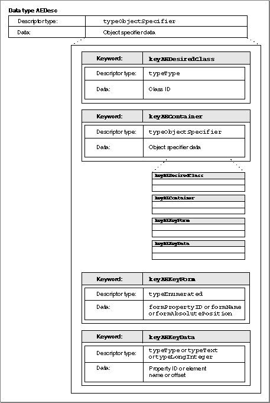
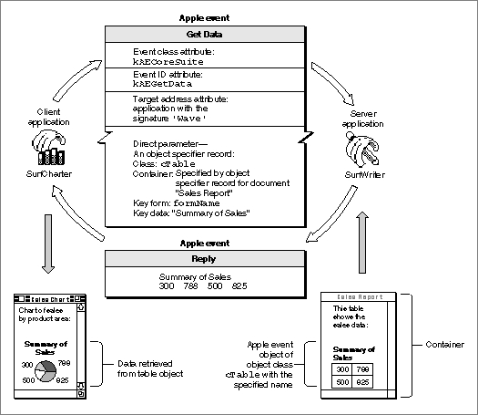

Legacy Document
Important: The information in this document is obsolete and should not be used for new development.
Important: The information in this document is obsolete and should not be used for new development.


Data Structures Within an Object Specifier Record
The organization of the data for an object specifier record is nearly identical to that of the data for an AE record. An object specifier record is a structure of data typeAEDescwhose data handle usually refers to four keyword-specified descriptor records describing one or more Apple event objects. An AE record is a structure of data typeAERecordwhose data handle refers to one or more Apple event parameters.The four keyword-specified descriptor records for an object specifier record provide information about the requested Apple event object or objects.
For example, the data for an object specifier record identifying a table named "Summary of Sales" in a document named "Sales Report" consists of four keyword-specified descriptor records that provide the following information:
The object class ID specifies the Apple event object class to which the object belongs. An Apple event object class is a category for Apple event objects that share specific characteristics (see "Apple Events and Apple Event Objects" on page 3-5). The characteristics of each object class are listed in the Apple Event Registry: Standard Suites. For example, the Core suite defines object classes for documents, paragraphs, words, windows, and floating windows. The first keyword-specified descriptor record in an object specifier record uses a four-character code or a constant to specify the object class ID. The object class for words, for example, can be identified by either the object class ID
- the object class ID for a table
- another object specifier record identifying the document "Sales Report" as the container for the table
- a key form constant indicating that the key data contains a name
- key data that consists of the string "Summary of Sales"
'cwor'or the constantcWord.
The container for an Apple event object is usually another Apple event object. For example, the container for a document might be a window, and the container for characters, delimited items, or a word might be another word, a paragraph, or a document. The container is identified by the second keyword-specified descriptor record in an object specifier record; usually this is another object specifier record. The container can also be specified by a null descriptor record, which indicates a default container or a container already known to the Apple Event Manager.
- Note
- The object class ID identifies the object class of an Apple event object described in an object specifier record, whereas the event class and event ID identify an Apple event.

The descriptor record in an object specifier record that identifies an Apple event object's container can in turn use another object specifier record to identify the container's container, and so on until the Apple event object is fully specified. For example, an object specifier record identifying a paragraph might specify the paragraph's container with another object specifier record that identifies a page. That object specifier record might in turn specify the page's container with another object specifier record identifying a document. The ability to nest one object specifier record within another in this way makes it possible to identify elements such as "the first row in the table named 'Summary of Sales' in the document named 'Sales Report.'"
The key form and key data distinguish the desired Apple event object from other Apple event objects of the same object class. The key form describes the form the key data takes. The third keyword-specified descriptor record in an object specifier record usually specifies the key form with one of seven standard constants:
A key form of
formPropertyIDindicates key data that specifies a property. A property of an Apple event object is a specific characteristic of that object that can be identified by a constant. The properties associated with the object class for documents include the name of the document and a flag indicating whether the document has been modified since the last save. The properties associated with the object class for words include color, font, point size, and style.Figure 3-13 shows the structure of a typical object specifier record: four keyword-specified descriptor records that specify the class ID, the container, the key form, and the key data. These four keyword-specified descriptor records are the data for a descriptor record (
AEDesc) of descriptor typetypeObjectSpecifier. Note the similarities between the object specifier record shown in Figure 3-13 and the Apple event record shown in Figure 3-9 on page 3-16. Like an Apple event record or an AE record, an object specifier record consists of a list of keyword-specified descriptor records.Figure 3-13 shows the structure of a simple object specifier record that specifies the key form
formPropertyID,formName, orformAbsolutePosition. For detailed information about the structure of object specifier records that specify the other key forms, see the chapter "Resolving and Creating Object Specifier Records" in this book.Figure 3-13 Data structures within a simple object specifier record

Figure 3-14 shows the object specifier record for the Get Data event previously illustrated in Figure 3-4 on page 3-10. The object class ID tells the SurfWriter application that the requested data is an element of class
cTable. The container for the table is the document "Sales Report." The key form isformName, which tells the server application that the key data identifies the Apple event object by name. The key data is the name of the table.Figure 3-14 An object specifier record in a Get Data event

To add an object specifier record to an Apple event as one of its parameters, your application must first create the object specifier record. "Creating Object Specifier Records," which begins on page 6-55, describes the Apple Event Manager routines for creating object specifier records.
To respond to Apple events that include object specifier records, your application should use the standard classification system for Apple event objects and provide functions that can locate those objects within your application or its documents. The next section summarizes the classification of Apple event objects as defined in the Apple Event Registry: Standard Suites.